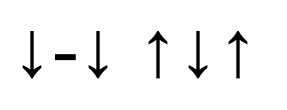
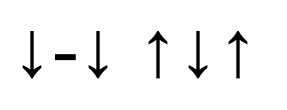

Your first song
This is a simplified version of Magnolia by Ana Malazonia, but it will still sound great.
Use the traditional Georgian rhythm and the three chords we have learned to play this song!
We're going to play the traditional Georgian rhythm 8 times total in one line. For example, on the first line, hold the b minor chord, and play the strumming pattern 4 times, then switch to e and play another 4 times. On the second line, continue holding the e and play the pattern 4 times, then switch back to b and play another 4 times. And so on and so forth!
Magnolia – Ana Malazonia
მაგნოლია - ანა მალაზონია
b e
ვით ფოთოლი შენი, მზეზე მოციმციმე, ქარებს აჰყოლია
b
და წასულა შენგან, გაფრენილა შენგან, მიწას დაჰკონვია
A
ისე გული ჩემი, სხვათა სხვათა სხვათა, უტყვი გამგონეა...
b
არ ვახსოვარ ალბათ, არ ვახსოვარ ალბათ, ჩემო მაგნოლია!
(repeat last two lines)
ჩვენ ცხრათვალა მზეთა და მძვინვარე ზღვათა ტრფობა გაგვყოლია...
მიგვატოვონ მარად, მათ სამხრეთის ქართა, რაღაც არ მგონია...
მაგრამ... გული მისი, სხვათა სხვათა სხვათა, უტყვი გამგონეა...
მე არ ვიცი რატომ... არც შენ იცი, რათა, ჩემო მაგნოლია?
(repeat last two lines)
ო, ასეთი წუთი, დაუბრუნებელი, შენც ხომ არ გქონია?
დაბრუნდება ისევ, დაბრუნდება ისევ, შენც ხომ არ გგონია?
მშვენიერი ზღვების, მშვენირი მთების ტრფობა გაგვყოლია...
როგორ მინდა შენთან, როგორ მინდა შენთან, ჩემო მაგნოლია!
(repeat last two lines)
 
